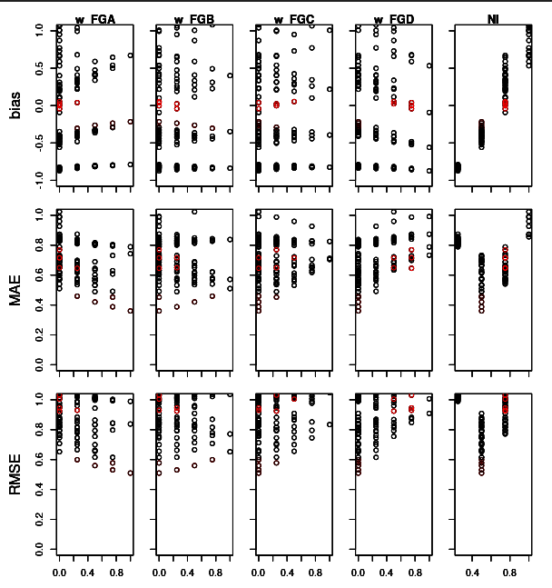

This vignette outlines the tools provided by growR for
model calibration. It focuses on the practical aspects of which
functions to call when. For an in-depth discussion about the calibration
procedure as a whole, see the respective article.
Prerequisites
We cannot calibrate anything without some reference data for which we
want to identify ideal model parameters. For the purpose of this
tutorial, we are going to make use of the example data provided with the
package. If you use your own data, be sure that it adheres to the data
file format as outlined in load_measured_data().
Furthermore, we need everything that’s also required to run a simulation: weather input, a parameter file and, optionally, management data. Confer the introductory tutorial for details. Again, we are going to use the example data here (though you can feel free to use your own). We’ll use the same setup as in the introductory tutorial:
working_dir = file.path(tempdir(), "growR_calibration_tutorial")
dir.create(working_dir)
setwd(working_dir)
library(growR)
#> +---------------------------------+
#> | Welcome to growR Version 1.1.0! |
#> +---------------------------------+
setup_directory(working_dir, force = TRUE)
#> [INFO]Initialized directory structure in `/tmp/RtmpKK9zoo/growR_calibration_tutorial`.
#> [INFO]Copying `/home/runner/work/_temp/Library/growR/extdata/posieux_weather.txt` to `/tmp/RtmpKK9zoo/growR_calibration_tutorial/input/`.
#> [INFO]Copying `/home/runner/work/_temp/Library/growR/extdata/posieux_parameters.csv` to `/tmp/RtmpKK9zoo/growR_calibration_tutorial/input/`.
#> [INFO]Copying `/home/runner/work/_temp/Library/growR/extdata/posieux_management1.txt` to `/tmp/RtmpKK9zoo/growR_calibration_tutorial/input/`.
#> [INFO]Copying `/home/runner/work/_temp/Library/growR/extdata/posieux_management2.txt` to `/tmp/RtmpKK9zoo/growR_calibration_tutorial/input/`.
#> [INFO]Copying `/home/runner/work/_temp/Library/growR/extdata/sorens_weather.txt` to `/tmp/RtmpKK9zoo/growR_calibration_tutorial/input/`.
#> [INFO]Copying `/home/runner/work/_temp/Library/growR/extdata/sorens_parameters.csv` to `/tmp/RtmpKK9zoo/growR_calibration_tutorial/input/`.
#> [INFO]Copying `/home/runner/work/_temp/Library/growR/extdata/sorens_management1.txt` to `/tmp/RtmpKK9zoo/growR_calibration_tutorial/input/`.
#> [INFO]Copying `/home/runner/work/_temp/Library/growR/extdata/sorens_management2.txt` to `/tmp/RtmpKK9zoo/growR_calibration_tutorial/input/`.
#> [INFO]Copying `/home/runner/work/_temp/Library/growR/extdata/posieux1.csv` to `/tmp/RtmpKK9zoo/growR_calibration_tutorial/data/`.
#> [INFO]Copying `/home/runner/work/_temp/Library/growR/extdata/posieux2.csv` to `/tmp/RtmpKK9zoo/growR_calibration_tutorial/data/`.
#> [INFO]Copying `/home/runner/work/_temp/Library/growR/extdata/sorens1.csv` to `/tmp/RtmpKK9zoo/growR_calibration_tutorial/data/`.
#> [INFO]Copying `/home/runner/work/_temp/Library/growR/extdata/sorens2.csv` to `/tmp/RtmpKK9zoo/growR_calibration_tutorial/data/`.
#> [INFO]Copying `/home/runner/work/_temp/Library/growR/extdata/example_config.txt` to `/tmp/RtmpKK9zoo/growR_calibration_tutorial`.
#> [INFO]Copying `/home/runner/work/_temp/Library/growR/scripts/compare.R` to `/tmp/RtmpKK9zoo/growR_calibration_tutorial`.
#> [INFO]Copied example files to respective directories.We will also already load the example configuration. For the sake of saving on computation time in this example, we limit the simulation to just one year. In a real-world situation, you should of course make use of all the calibration data available to you!
envs = read_config("example_config.txt")
# We only need one run environment.
env = envs[[1]]
# Save compuation time by considering only one year
env$years = env$years[1]The parameter scan loop
The essential approach to finding optimized parameters for a given site is to run and evaluate the model for many different sets of parameters. By comparing their performance scores, we can hone in on those parameter combinations that are promising. We then evaluate the model with more parameter sets, now in the regions of parameter space where we suspect good performace. We can keep doing this until we do not seem to find better parameter sets anymore or until we are satisfied (see the in-depth article for a much more detailed description).
The three functions that facilitate this iterative procedure are
run_parameter_scan(), analyze_parameter_scan()
and plot_parameter_scan(). The first makes it easy to carry
out model runs for many different parameter sets.
analyze_parameter_scan() then takes the output of these
model runs and compares them to a set of reference data to assign
performance scores to each run. Finally,
plot_parameter_scan() visualizes these performance scores
as a function of input parameters and thus helps identify good
regions in parameter space.
Running a parameter scan
We can define the parameter values of interest as input to
run_parameter_scan(). The function will then automatically
generate all possible, valid combinations of parameters and run the
model in a given configuration for each of these parameter combinations.
Given that even for relatively small parameter ranges we can end up with
a number of combinations in the order of 100, this step can become quite
calculation intensive.
Initially, if we have absolutely no prior knowledge about the
parameters, we have to consider all parameters across their full
possible ranges. An input for run_parameter_scan() might
thus look like this:
param_values = list(w_FGA = seq(0, 1, 0.25),
w_FGB = seq(0, 1, 0.25),
w_FGC = seq(0, 1, 0.25),
w_FGD = seq(0, 1, 0.25),
NI = seq(0.25, 1, 0.25))Be sure to read the documentation of
run_parameter_scan() and the more detailed descriptions in
create_combinations() regarding sensible construction of
param_values.
We are now ready to go:
pscan_results = run_parameter_scan(env, param_values,
outfilename = "pscan_results0.rds")This might take some time to run and will store the results in a
binary format in "pscan_results0.rds" as well as in the
variable pscan_results.
Analyzing a parameter scan
In order to evaluate the model outputs, we need to compare them to
some reference data. In our current setup, we know that the
corresponding data is stored under data/.
# Prepare path to reference data
site = env$site_name
print(site)
#> [1] "sorens1"
datafile = file.path("data", sprintf("%s.csv", site))Instead of specifying the path we could also have loaded the data and
passed the data.frame as an argument to
analyze_parameter_scan(). Similarly, we can use the path to
the binary file created by our previous call to
run_parameter_scan() or just the stored object in
the variable.
# Analyze!
analyzed = analyze_parameter_scan(pscan_results, datafile)This shouldn’t take long to compute. You can have a look at the output data.frame and see how well different combinations perform:
analyzed$resultsA much more intuitive way, however, is to visualize these results:
plot_parameter_scan(analyzed)This should create a plot similar to the following: 
We have a subplot for each combination of scanned parameter and used metric (bias, mean absolute error MAE and root of mean-squared error RMSE). In each subplot, we have a point for every evaluated parameter combination.
plot_parameter_scan() puts you into a small interactive
command line interface (CLI), which allows you to highlight different
parameter combinations in the plot and display their numeric values on
the console. Refer to the on-line help (?) for more on how
to use this little tool.
From this plot we can already make out some trends:
- (top right plot) NI clearly correlates with bias.
- (same plot) NI values of 0.9 or 0.3 fail to produce good (i.e. close to 0) bias.
- (NI column, bottom two rows) Similarly, NI values 0.3 and 0.9 lead to large MAE and RMSE.
From this we can pin down the ranges of plausible NI values to larger than 0.3 and smaller than 0.9.
- (w_FGC and w_FGD columns) Parameter combinations with low amounts of C and D clearly score better than those with large C or D.
- (w_FGD column) The same can be said about B, but the effect is less extreme.
- (w_FGA column) The opposite trend is visible for A.
From this we could for example narrow down w_FGA to be larger than 0.3, B to be no greater than 0.8 and C and D to be smaller than 0.5.
We can now do a new parameter scan with updated param_values, e.g.
param_values = list(w_FGA = seq(0.3, 1, 0.1),
w_FGB = seq(0, 0.7, 0.1),
w_FGC = seq(0, 0.3, 0.1),
w_FGD = seq(0, 0.3, 0.1),
NI = seq(0.5, 0.7, 0.05))Since we have narrowed down the ranges, we can afford to increase the resolution, i.e. decrease the step size for the parameters. Keep iterating this process until you’ve narrowed down the parameter ranges to a degree that is acceptable for you.
The exact choice of which parameters ranges to examine is, of course, up to you and might require some experimentation. It might, for example, make sense to keep the functional group weights unconstrained and first pin down NI. In other situations you might be able to make use of some prior knowledge, e.g. a measurement of the plant composition, which gives you a hint towards which functional groups should be prevalent. Refer to the in-depth guide for a more rigorous discussion.